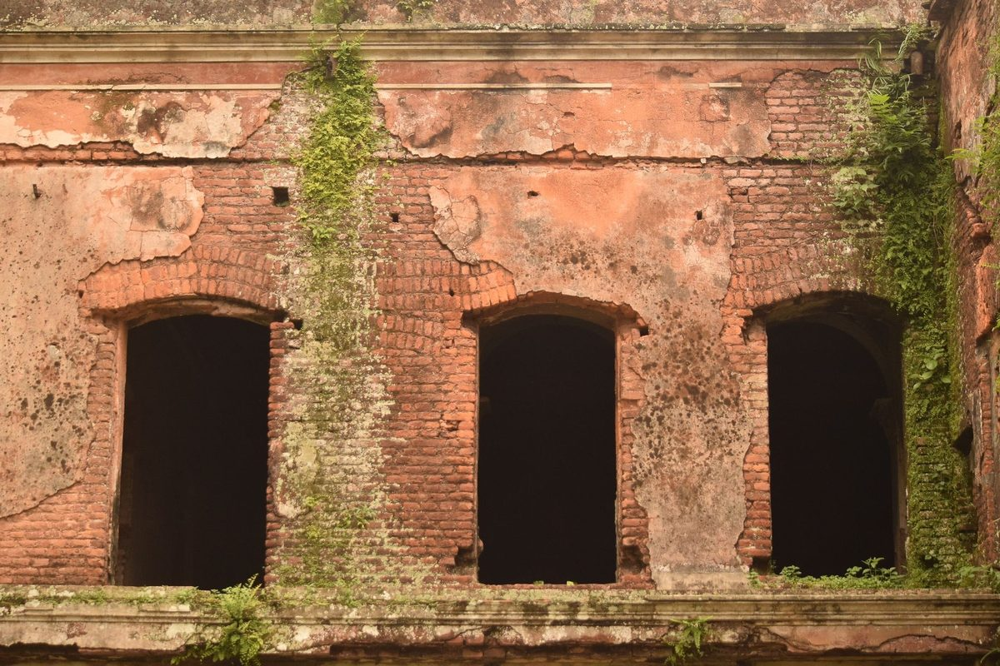
01Cegła z odzysku
Odbieramy starą cegłę z rozbiórek i dajemy jej drugie życie. Prawdziwa patyna, nie sztuczne postarzanie.

Cegła rozbiórkowa z odzysku i płytki cięte z pełnej starej cegły - na ścianę w salonie, kominek, elewację czy ogród. Każdą partię sortujemy, czyścimy i dobieramy odcień, a materiał dowozimy na miejsce. Żyrardów i okolice.
Stara cegła dostaje drugie życie - z rozbiórek, sortowana i czyszczona, na ścianę, kominek i elewację.
Odbieramy cegłę z rozbiórek, czyścimy z zaprawy i sortujemy według koloru oraz stanu, a z części tniemy płytki i naroża na ściany. Z jednego materiału zrobisz murek w ogrodzie i ceglaną ścianę w salonie. Doradzimy, która cegła sprawdzi się na kominek, która na elewację, a która da najlepszy efekt w mieszkaniu.
Zobacz, co mamy na składzie
01Odbieramy starą cegłę z rozbiórek i dajemy jej drugie życie. Prawdziwa patyna, nie sztuczne postarzanie.
 02
02Każdą partię czyścimy z zaprawy i sortujemy według koloru i stanu, żebyś dostał to, co widzisz.
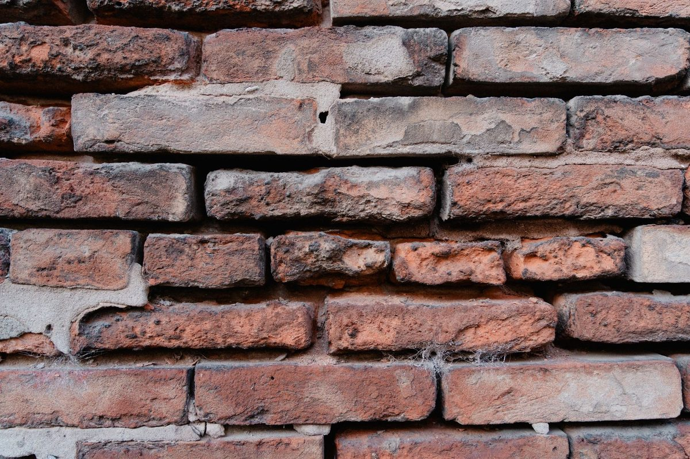
03Z pełnej cegły tniemy płytki i naroża na ścianę - lżejsze, a charakter dokładnie ten sam.
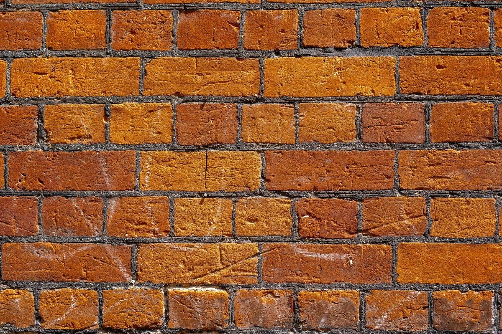
04Podpowiemy, która cegła da najlepszy efekt na Twojej ścianie, kominku czy elewacji.
 05
05Obejrzysz i dotkniesz materiał na miejscu, zanim się zdecydujesz. Bez kupowania w ciemno.
 06
06Materiał dowozimy pod wskazany adres, gotowy do układania. Żyrardów i okolice.
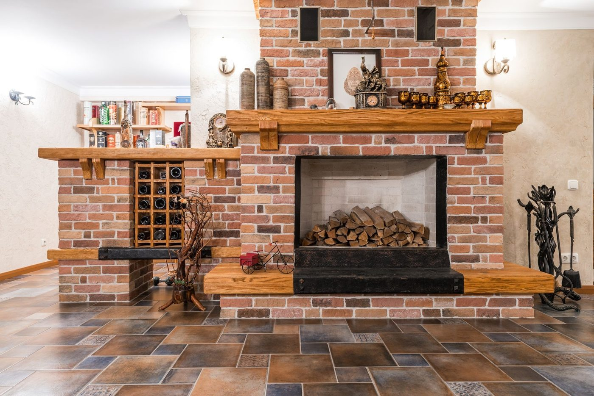
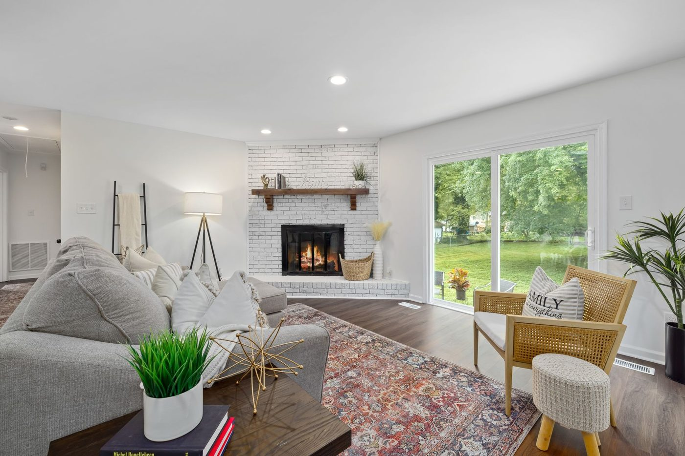
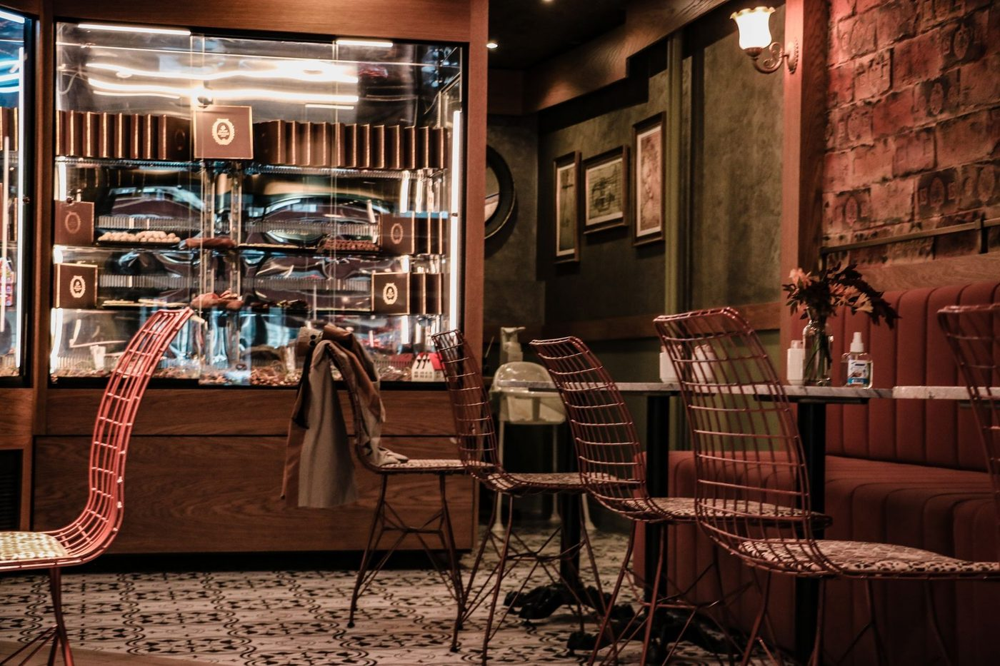
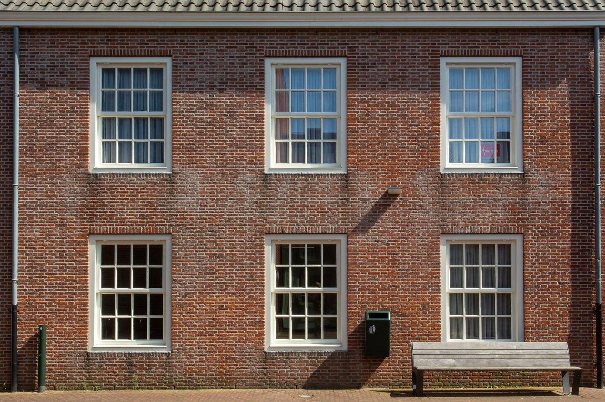
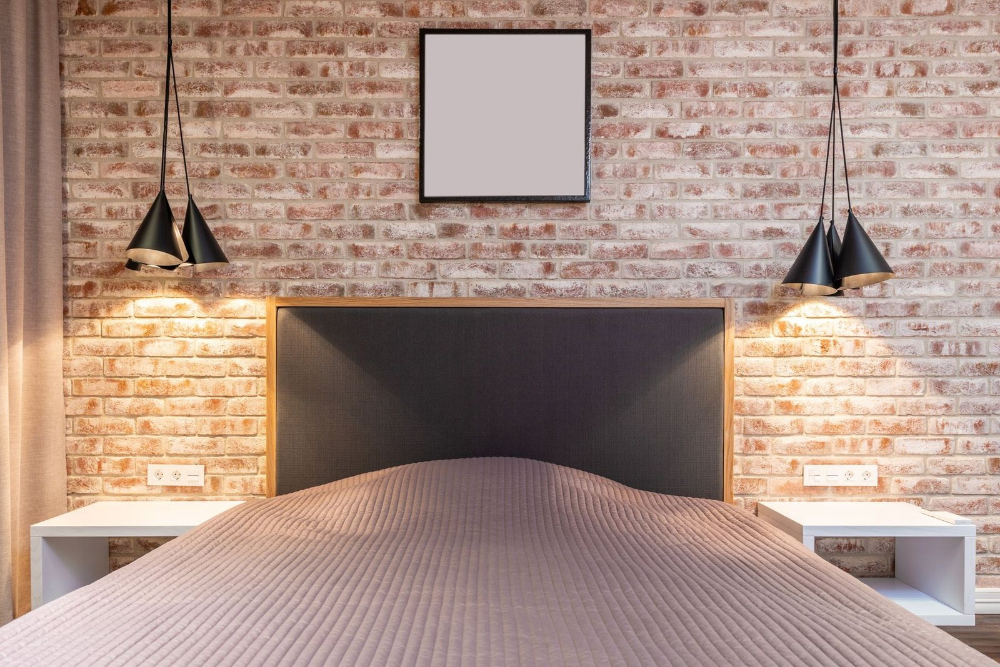

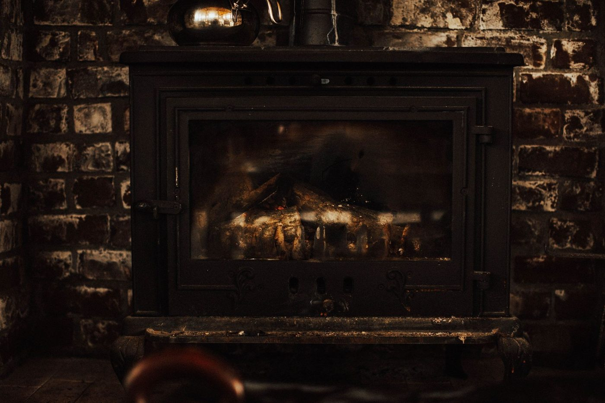
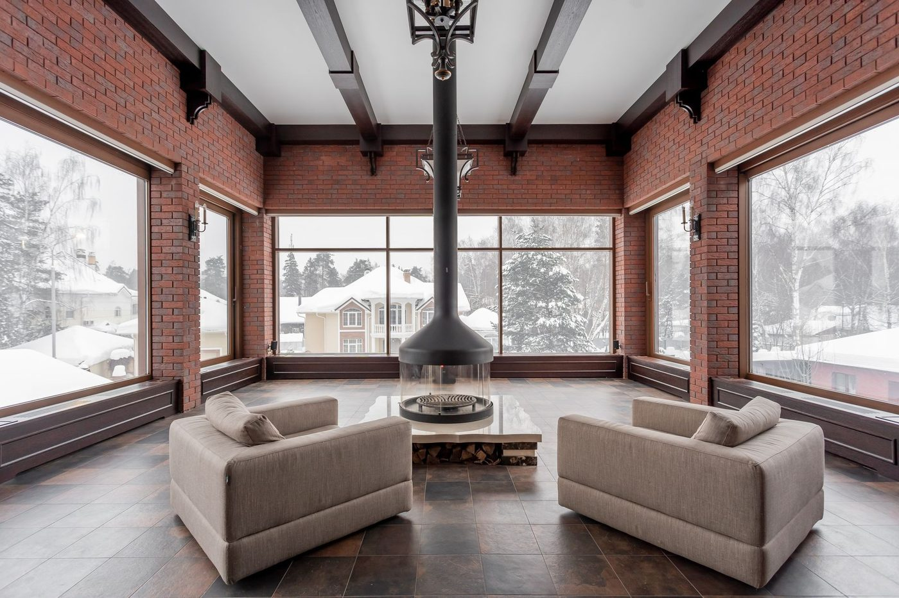
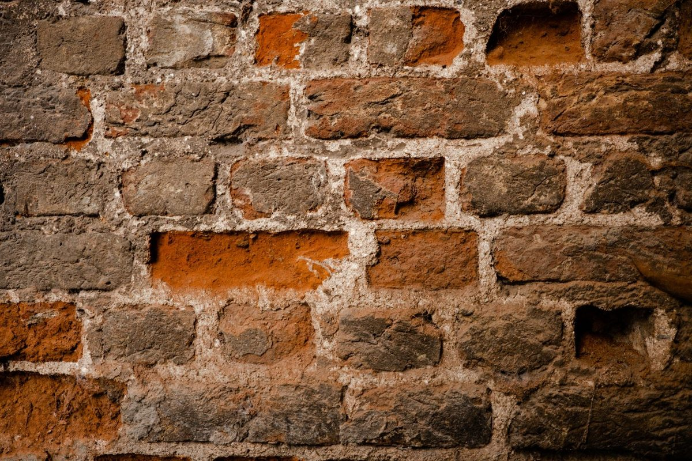
Aranżacje pokazują, jak wygląda stara cegła i płytki na ścianie. Materiał z naszego składu widzisz wyżej, w sekcji Produkty - a każdą partię obejrzysz na miejscu, w Żyrardowie.
Obejrzysz materiał na składzie albo opowiesz przez telefon, co planujesz. Powiemy, co się sprawdzi.
Dobieramy odcień i ilość pod Twój projekt - ścianę, kominek czy elewację - i podajemy jasną cenę.
Dowozimy pod wskazany adres, posortowane i gotowe do układania.
„Cegła dokładnie w takim odcieniu, jak chcieliśmy pod ścianę w salonie. Posortowana, czysta, dowieziona na czas. Efekt rewelacyjny."
Klient z Żyrardowa
„Płytki z cegły i naroża na kominek - wszystko pasowało kolorem. Można było przyjechać i wszystko obejrzeć przed zakupem."
Klientka z okolic Żyrardowa
„Stara cegła na elewację, w świetnym stanie i w dobrej cenie. Doradzili, ile potrzeba i dowieźli pod adres. Polecam."
Klient z okolic Żyrardowa
Ocena 5,0 w Google. Miejsce na Twoje kolejne opinie - podepniemy je po podpięciu wizytówki.
1 Maja 19, 96-300 Żyrardów · skład starej cegły · Jak dojechać
Skład starej cegły rozbiórkowej i płytek z cegły w Żyrardowie. Cegła z odzysku, sortowana i czyszczona, na ścianę, kominek, elewację i ogród - z transportem.